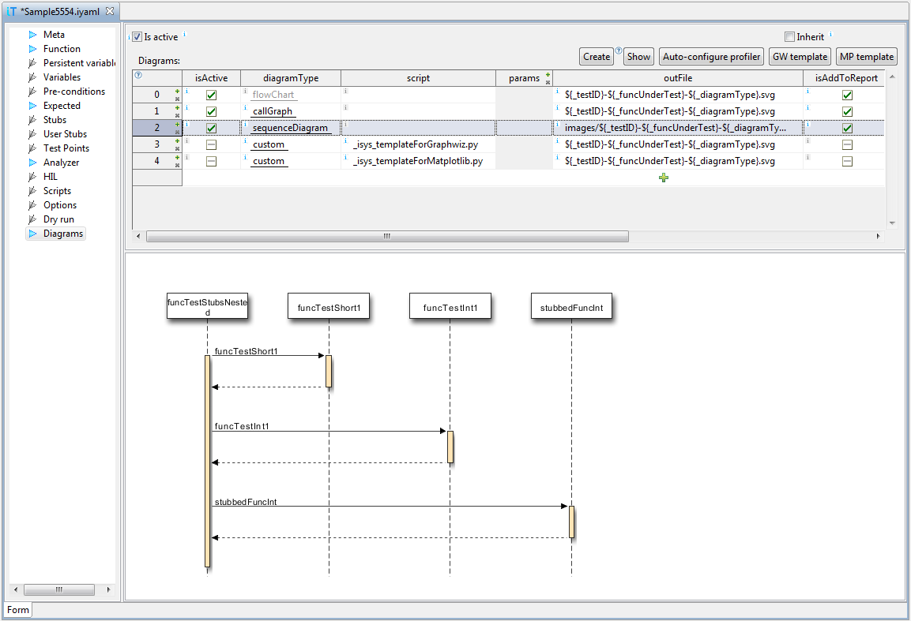
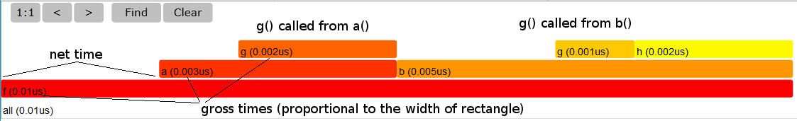
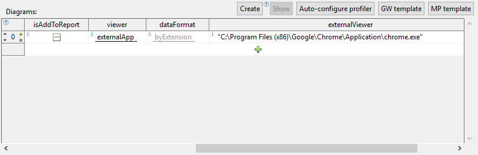

Requirement: For sequence diagrams module seqdiag has to be installed in Python used by winIDEA. It is already present in winIDEA's internal Python, so if you have selected in winIDEA Tools | Options | Script | Internal Python x.y, then there should be no problems. If you have selected one of the other two options in this dialog to use your installation of Python, then you have to install the module seqdiag yourself. See https://pypi.python.org/pypi/seqdiag/ for installation.

Columns in the diagram configuration table have the following meaning:isActive - if checked, and complete section is
enabled with check-box Is active, the diagram will be
created during test execution. After test execution you can
always create a diagram with button Create, regardless
of this setting.
diagramType - this column contains one of
built-in diagram types or defines a custom diagram type. In the
later case the script name should be specified in the next
column.script - for custom diagrams this column
specifies name of Python script to be executed to draw a
diagram. It is ignored for built-in diagrams.
params - this column specifies script
parameters, if they are required. For built-in diagrams
this column should be empty.
outFile - this column specifies name of the
file, which will contain the diagram. It is mandatory, and may
contain host variables
${_testId}, ${_function},
and ${_diagramType}. If file name is relative
(recommended),
diagrams are saved relative to test report directory. It is
highly recommended to specify test report file with command
Test | Configure Test Report before running
tests.
For built-in diagrams the value of '_diagramType' is the name of
built-in type, for custom diagrams, it is string 'custom'.
If two lines have the same output file name,
warning is written in Status view.
isAddToReport - if checked, the link to diagram
file is included in test report, when saved. Diagrams of type
custom-async can not be added to test report. Diagram files
are part of test report, so they must not be deleted to be
shown in report.
viewer - for quick preview, diagrams are shown
in the bottom pane of the Diagrams test case section. For
better view, we can open them as documents, either as one
diagram per tab (singlePage) , or as one tab in
multi-page document (multiPage). externalApp opens
diagram image in an external application.
dataFormat - testIDEA can show diagrams saved
to bitmap file formats (png is recommended) and vector format (only
svg is supported). The recommended value for this column
is byExtension and specified extension png
or svg in output file. Both formats are supported by
matplotlib and graphwiz, and can be shown by web browsers in
test report. Other formats may not be shown in web browser.
externalViewer - if output format is not
supported by testIDEA, or for some other reason we want to see
a diagram in external application, we can specify its
name here. If externalApp is selected in column viewer,
then Button Show will open the output file
with this application. If externalApp is selected, but
this field is empty, then default system viewer for the given
output file extension will be used.
test-0-myFunc-callGraph.png ==> callGraph. To get
full file name as tab name, replace all '-' in file name with
some other character, for example underscore.
Flow chart
This chart is created from static object code
analysis. Test does not need to be run to get information
for this diagram, but the code has to be downloaded to the target.
Call graph
This diagram shows which function has called which function, and
how many times this call has been executed. It shows runtime
information, which is obtained from profiler recording. Profiler has to be
properly configured for this diagram (see button Auto-configure
profiler) and the test executed.
Static call graph
This diagram shows function call hierarchy. It shows static
information obtained from download file, so the test does not need
to be run to create this graph.
Parameters:
-t : By default functions called form the function under test are
shown. If we specify this parameter, then functions
which call function under test are shown.
-d <n> : By default complete hierarchy is
shown. By specifying depth value, we can limit call depth shown.
Sequence diagram
This diagram shows UML sequence diagram - function calls in the
same sequence as they occurred.
Flame graph
This graph shows time spent in each call stack. The detailed
description is available at
CPU
Flame Graphs, except that testIDEA shows execution time,
not execution count.
Summary adapted for testIDEA flame graphs:
g() {}
h() {}
a() {
g();
}
b() {
g();
h();
g();
}
f() {
b();
b();
a();
}
Flame graph with added explanations is shown below. It can be seen
that two calls of b() and four calls
of g() are merged together. Call stacks are shown in
alphabetical order, not execution order.

Script parameters
python /Lib/site-packages/isystem/flameGraph.py -h
Note that title, profiler export, and output file name are already
specified by testIDEA.
Interactivity
Flame graphs are interactive, which means clicking a function box
performs zoom. Unfortunately testIDEA SVG viewer does not support
these features, so it is recommended to open it in javascript
capable SVG viewer, for example Firefox or Chrome web browser (IE
and Edge do not support all functionality). In table with diagrams
select externalApp in column viewer, and enter path to your browser
in column externalViewer:

args.dotDir - directory with graphwiz tools
bundled with winIDEA.
args.testID - test ID of the executed test case
args.functionName - name of function under test
args.cvrgExport - name of coverage export file
args.profExport - name of profiler export file
args.traceExport - name of trace export file
args.analyzerDoc - name of analyzer document (trd file)
args.outFileName - name of image file. This
parameter is always present, and is always the last item
specified in command line, even if user arguments are provided.
_isys_diagutils. This
module is created by testIDEA, when you create a
template. Never modify this module, because it is
repeatedly overwritten by testIDEA when you create
template scripts!
main(args), and call it
with command line arguments, as shown below:
import sys
import _isys_diagutils
def main(cmdLineArgs):
args = _isys_diagutils.parseArgs(cmdLineArgs, None)
< ... your code ... >
if __name__ == '__main__':
main(sys.argv[1:])
See documentation in source code of template scripts for more information.